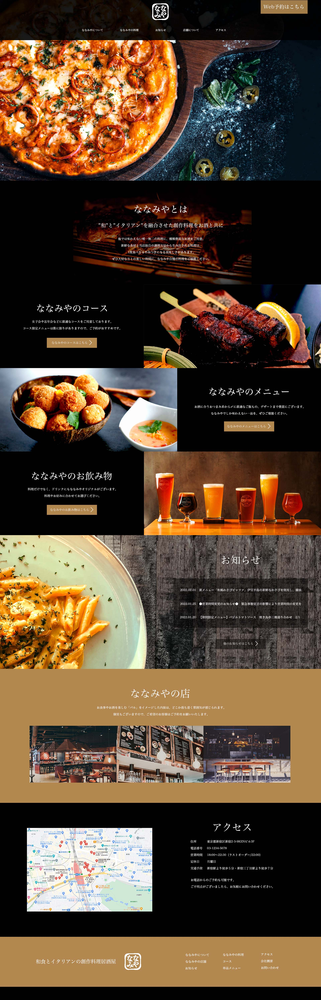

居酒屋ななみや
・和食とイタリアンの創作料理を提供する飲食店
・30〜40代、会社帰りや女子会、宴会の利用が多い
・都内に数店舗構えており、本店は新宿店
・店舗はバルをイメージした内装、個室も完備
・独自の調理方法を駆使した料理が多く、コースや単品メニューで提供している
・料理に合わせた飲み物も提案しており、食べ飲み放題が1番人気
- 意識した点
-
サイトを見たお客様の食欲をそそる様な写真を多く使用。
創作料理を提供する大人な居酒屋のイメージに合わせ、
黒を基調にして料理の写真が映える様にしました。
またナビゲーション
動きのある、印象に残るようなデザインを意識しました。
ロゴマークも筆記体を用いて華奢な女性らしい印象にしました。 - 使用スキル
- illustrator/Photoshop
